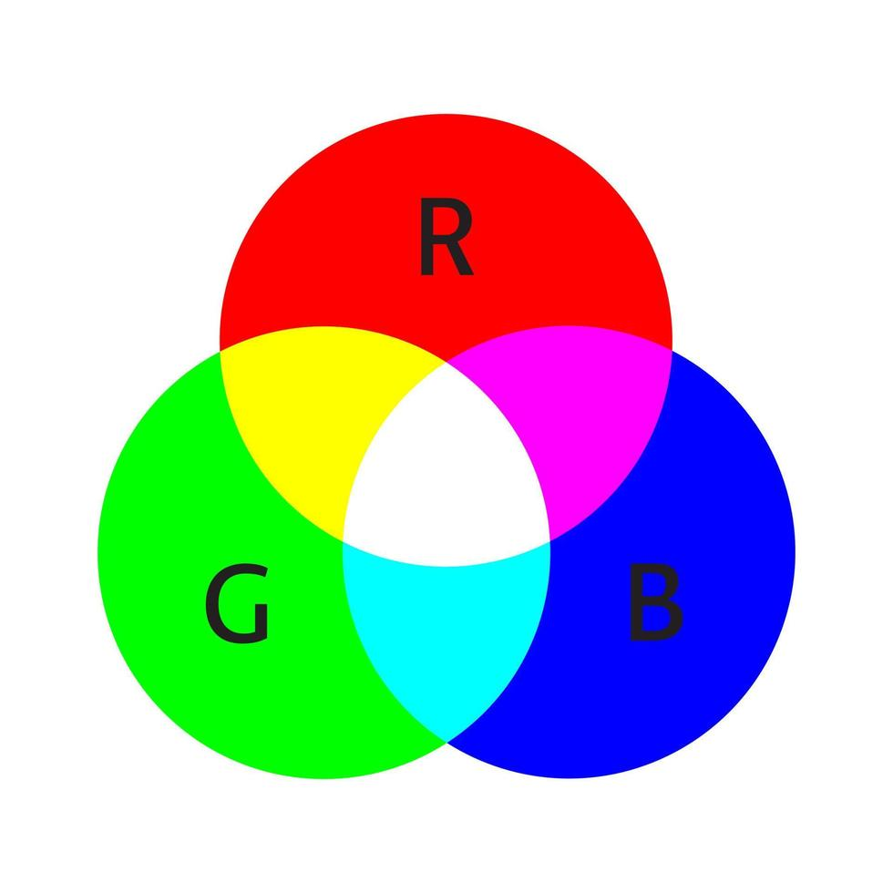

Uitleg over kleurmodellen:
Korte uitleg:
Op computers zie je als het goed is voortdurend kleuren langs vliegen over het scherm. maar dat is niet zomaar.
Daarvoor worden kleurmodellen gebruikt. Via kleurmodellen laat de computer het scherm zien welke kleur zij getoond willen hebben op het scherm.
Voorbeelden:
In films zie je kleuren m.b.v. kleurmodellen, in series, in games, op social media, op filmpjes en foto's en noem maar op!
Hoe werkt het:
Het werkt zo: De makers geven aan welke kleur zij willen vertonen op het scherm. Met een soort paletje stel je dat in.
De computer slaat dat direct op en projecteert onmiddelijk het ingesteld kleurtje op het scherm. En voíla: het scherm heeft in een keer kleur!
